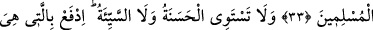
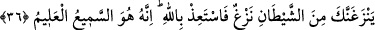

KİMİN SÖZÜ
DAHA GÜZELDİR?
33. (İnsanları) Allah’a çağıran, iyi iş yapan ve «Ben müslümanlardanım»
diyenden kimin sözü daha güzeldir?
34. İyilikle kötülük bir olmaz. Sen (kötülüğü) en güzel bir şekilde önle. O zaman
seninle arasında düşmanlık bulunan kimse, sanki candan bir dost olur.
35. Buna (bu güzel davranışa) ancak sabredenler kavuşturulur; buna ancak
(hayırdan) büyük nasibi olan kimse kavuşturulur.
36. Eğer şeytandan gelen kötü bir düşünce seni dürtecek olursa, hemen Allah’a
sığın. Çünkü O, işiten, bilendir.
“(İnsanları) Allah’a”; O’nun birliğine ve O’na itâate “çağıran, iyi iş yapan” Allah’a
iyi kulluk eden, onlardan biri olmaktan sevinip gurur duyarak İslâm’ı din olarak
benimseyen “ve «Ben müslümanlardanım» diyenden kimin sözü daha güzeldir? Söz
söyleme yönünden daha iyi olan kimdir? Öte yandan İslâm dîni dışındaki bir inançla
itâat makbul değildir.
Bu âyet-i kerimenin muhtevâsından “ben Müslümanım inşallah”; yani “Allah dilerse
ben Müslümanım” demenin doğru olmadığı anlaşılmaktadır. Çünkü burada Müslümanlık
ifâdesi “Allah dilerse” gibi hiçbir şarta bağlı olmaksızın mutlak olarak zikredilmiştir.
Bu konuda kelâm ve akaid âlimleri şu îzâhı yaparlar: “Ben Müslümanım inşallah”
diyen kişi bu ifâdesiyle şâyet kendi Müslümanlığından şüphe ediyorsa bu durum mutlak
inkâr ve küfürdür. Yok, eğer Allah’a karşı olan tevâzu ve edebinden böyle söylüyor ve
işi Allah’ın irâdesine havâle ediyorsa ya da içinde bulunduğu ânı ve hâl-i hazırdaki
durumu değil, işin sonunu ve ilerideki durumunu bilmediği ve bilemeyeceği için böyle
söylüyorsa, yahut da Allah’ın adının geçtiği bu ifâdeyle bereket murâd ediyorsa ya da
nefsini tezkiye edip temize çıkarıp kendini beğenmekten uzak durmak maksadıyla böyle
söylüyorsa, bu durumlarda: ‘Ben Müslümanım inşallah’ demek câiz olur. Fakat yine de
îmânî bir konuda akla birtakım şüpheler getireceği endişesiyle bu gibi sözleri terk